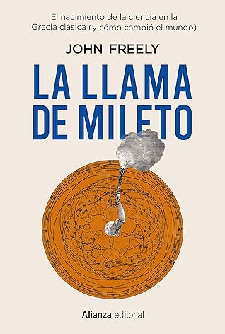

La llama de Mileto: El nacimiento de la ciencia en la Antigua Grecia (Alianza Ensayo nº 813) (Spanish Edition)
Reseña por Jorge I. Zuluaga

Ver reseña en GoodReads (necesita cuenta)
Esta es la herencia de la ciencia y la filosofía griegas que comenzaron con los primeros físicos en Mileto y florecieron en los huertos de la Academia y de Apolo en Atenas, y en la biblioteca y el Museo de Alejandría, creando la más duradera y poderosa de todas las fuerzas que han conformado el mundo moderno.
La "Llama de Mileto" es una breve historia de la ciencia occidental, con especial énfasis en el legado griego, contada en un par de centenares de páginas. Y aunque puede decirse que esta historia se ha narrado cientos, sino miles de veces en otros libros, la bondad de este texto es que lo hace de una forma legible y compacta.
Lo más increíble para mí fue descubrir, o más bien redescubrir —porque esta es una historia que he tenido la suerte de leer múltiples veces, especialmente en libros fantásticos como El infinito en un junco o La ruta del conocimiento—, las rutas asombrosas que siguieron las ideas de los pensadores griegos para convertirse en el germen, primero del renacimiento medieval, después del renacimiento clásico (el Renacimiento propiamente dicho) y "finalmente" de la revolución científica de los 1600.
Saber que una cantidad importante del corpus de conocimientos legado por la antigüedad pasó primero por la lengua árabe, pero también por el farsi y el siríaco, antes de vaciarse en libros en el latín que leyeron los precursores de la ciencia moderna, es simplemente asombroso. Que un texto que vio la luz tal vez en lengua jónica, y que viajó por todo el Mediterráneo, de Samos a Atenas, de allí a Alejandría, luego a Bizancio, Bagdad, Toledo, Lyon y Venecia para volver a Bizancio, para después regresar a Pisa o a Viena e iluminar el nacimiento de la astronomía o la medicina moderna, nunca podrá ser considerada una historia más.
¿Por qué no le doy 5 estrellas? A pesar de que su extensión es bastante razonable, lo que, como dije antes, hace de este una gran síntesis de la historia de la ciencia, el texto a veces ahonda en detalles sobre los contenidos de algunos libros que tal vez son innecesarios. Estos apartes más densos tal vez espanten al lector desprevenido, haciendo que se pierda la mirada en conjunto que se obtiene cuando se lo lee completo.
El capítulo final, que narra la historia del redescubrimiento de algunos escritos e invenciones del gran Arquímedes de Siracusa, es asombroso. No les doy más detalles, pero vale la pena llegar hasta allí en el libro para darse cuenta de que valió la pena hacer el viaje completo.
Un libro de lectura obligada para científicos, mujeres y hombres, especialmente para matemáticos, físicos y astrónomos.
¡Feliz viaje!